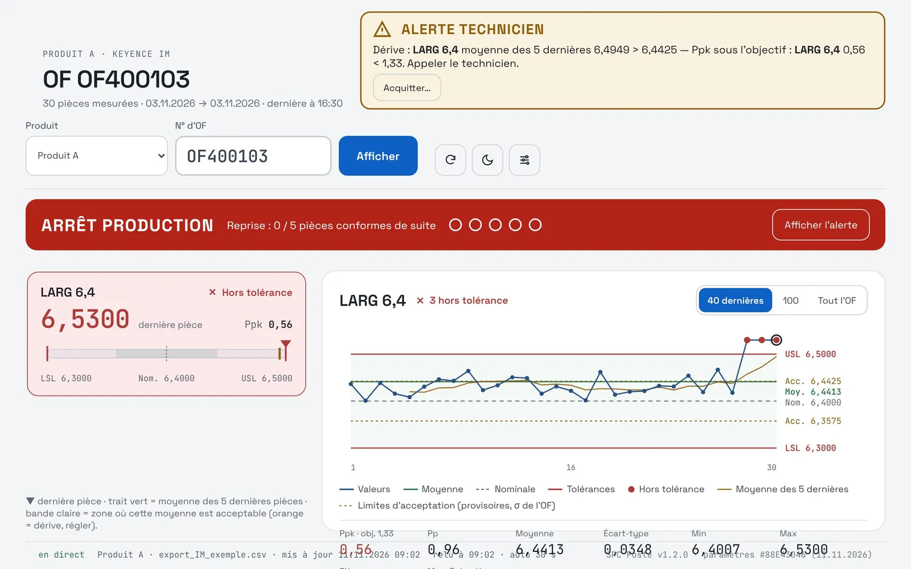
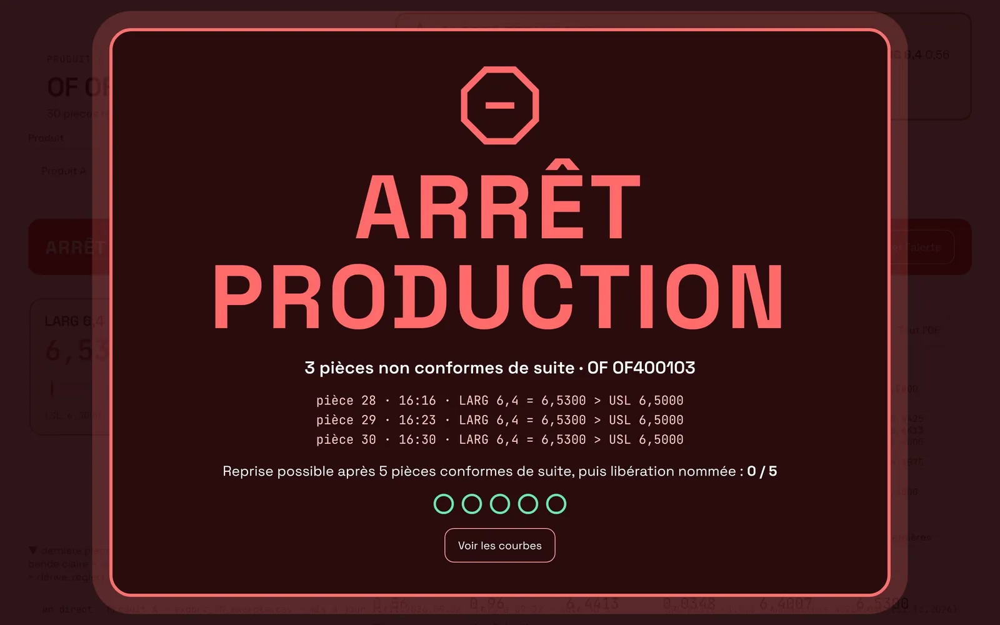
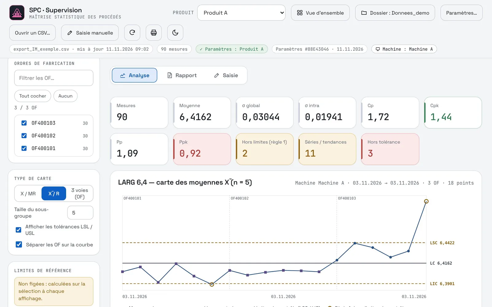
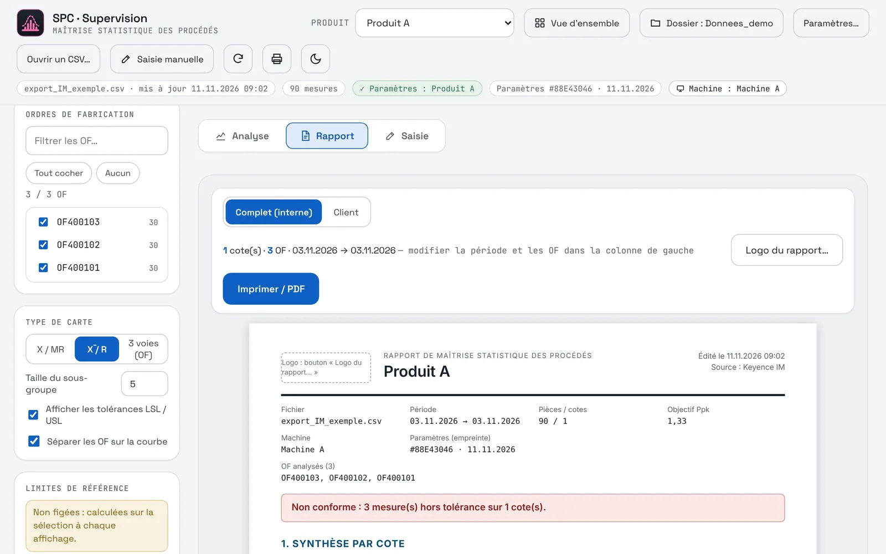

← Back to applications
Production · SPC
Spot the drift before it reaches the customer
Machine measurements become control charts, capability indices and reports, with no copy-pasting. At the workstation, the operator sees the drift and production stops by itself when it has to.
The problem
Before: no monitoring, and reports built by hand
Before
- Export the measurements from the machine by hand
- Paste them into an Excel file set up in German
- Take a screenshot of the result
- Repeat for every dimension to monitor
- Paste everything into a Word report, with images of different sizes
1 to 2 hper report, and no monitoring during production
Now
- The app reads the measuring machine exports directly
- Charts, capability and detection rules are computed for every dimension
- The report, internal or customer, is generated and printed to PDF
- At the workstation, the operator follows every part in real time
A few clicksfor a clean report, and real monitoring of the milling machine
On the shop floor
Automated SPC of critical parameters, first in an Excel file and then in this application, raised the yield of a highly complex Chip-on-Board product from 89 % to 98 %. Process monitoring statistics also made it possible to trace a milling defect back to its root cause.
The application
Two screens, two jobs
Supervision · quality and managers
Analyse a product, a dimension, a period or selected work orders.
- X/MR, X̄/R and three-way charts by work order
- Cp, Cpk, Pp, Ppk capability, within and overall standard deviations
- Detection of out-of-limit points, runs and trends
- Frozen, versioned reference limits
- Internal and customer reports ready to print
Workstation · operator on the shop floor
A screen readable from a distance, refreshed every 30 seconds.
- Last part measured, position within the tolerance
- Moving average and acceptance zone to see the drift
- Technician alert when the average leaves the zone
- Line stop after 3 consecutive non-conforming parts
- Restart after 5 conforming parts and a named release
Screenshots
The application in pictures
Fictitious sample data. Interface in French.





Under the hood
Easy to deploy, robust in use
A single HTML fileOpens in Edge or Chrome. Nothing to install, no server.
Direct export readingThe Keyence machine CSV files are reread automatically.
Settings by productDimensions, tolerances and alert thresholds in a shared file.
Reaction logEvery alert and every release is recorded.
Light and darkThe workstation stays dark for the shop floor, supervision as you like.
Shared foundationSame theme and same storage as the other applications.